Sección 5 Análisis de Conglomerados
5.1 Distancias y disimilitudes
Antes de entrar al tema de análisis de clústers es importante introducir los conceptos de distancias y disimilitudes o similitudes.
Una medida de disimilitud o distancia entre dos sujetos muy distintos será grande y por el contrario, una medida de similitud entre ellos será pequeña.
Una distancia es una función \(d: \mathcal{X}\times \mathcal{X}\to \mathbb{R}\) que cumple las siguientes propiedades:
Para cualesquiera \(x,y\in\mathcal{X}\) se tiene que \(d(x,y)\geq 0\).
Se cumple que \(d(x,y)=0\) si y sólo si \(x=y\).
Para cualesquiera \(x,y\in\mathcal{X}\) se cumple que \(d(x,y) = d(y,x)\) (condición de simetría).
Para cualesquiera \(x,y,z\in\mathcal{X}\) se cumple la desigualdad del triángulo: \[ d(x,y)\leq d(x,z) + d(z,y). \]
Dos de las distancias más comunes en estadística para variables aleatorias multivariadas cuantitativas son la distancia euclidiana y la distancia de Mahalanobis:
Si \(\bar{x},\bar{y}\in\mathbb{R}^n\), entonces la distancia euclidiana \(d_E\) entre \(\bar{x}\) y \(\bar{y}\) está dada por \[ d_E\left( \bar{x}, \bar{y} \right) = \left[ \left(\bar{x} - \bar{y}\right)'\cdot \left( \bar{x}- \bar{y} \right) \right]^{\frac{1}{2}} \]
Si \(\bar{x},\bar{y}\in\mathbb{R}^n\), entonces la distancia de Mahalanobis \(d_M\) entre \(\bar{x}\) y \(\bar{y}\) está dada por \[ d_E\left( \bar{x}, \bar{y} \right) = \left[ \left(\bar{x} - \bar{y}\right)' \Sigma^{-1} \left( \bar{x}- \bar{y} \right) \right]^{\frac{1}{2}} \] donde \(\Sigma^{-1}\) denota a la matriz inversa de la matriz de covarianzas de \(\bar{x}\) y \(\bar{y}\).
Existen otras distancias, como la distancia de Gower que puede ser utilizada para estudiar variables aleatorias con entradas cuantitativas y/o cualitativas.
Informalmente, una similitud es una medida entre dos objetos de que tanto se parecen. Por lo cual entre más parecidos sean los dos objetos su medida de similitud será más grande. Usualmente toma valores positivos entre 0 y 1.
Formalmente, una similitud es una función \(s: \mathcal{X}\times \mathcal{X} \to \mathbb{R}\) que típicamente satisface las siguientes dos condiciones:
\(s(x,y)=1\) si y sólo si \(x=y\). Además \(0\leq s\leq 1\).
\(s(x,y)=s(y,x)\) para todo \(x\) y \(y\) (condición de simetría).
Usualmente, la función de similitud satisface \(s(x,y)\geq 0\) pero existen ejemplos de similitudes que no lo satisfacen, por ejemplo: el coeficiente de correlación y los productos escalares. Sin embargo, si la función de similitud no es positiva y está acotada siempre es posible transformarla en una función de similitud positiva añadiendo una constante, es decir, podemos escribir nuestra nueva función de similitud \(\tilde{s}\) como \(\tilde{s}(x,y)=s(x,y)+c\), donde \(c\) es una constante positiva lo suficientemente grande.
A diferencia de una distancia o una disimilitud, no existe un análogo para la desigualdad del triángulo para la similitud.
Informalmente, una disimilitud entre dos objetos es una medida del grado en el cual dos objetos son diferentes. Como es de esperarse, una disimilitud debe ser baja si se consideran pares de objetos que son similares.
De manera precisa, una disimilitud es una función \(d: \mathcal{X}\times \mathcal{X} \to \mathbb{R}\) que satisface las siguientes dos condiciones:
Para cualquier \(x\in\mathcal{X}\) se tiene que \(d(x,x) = 0\).
Para cualesquiera \(x,y \in \mathcal{X}\) se cumple que \(d(x,y)\geq 0\) (condición de no negatividad).
Para cualesquiera \(x,y\in\mathcal{X}\) se cumple que \(d(x,y) = d(y,x)\).
Es importante mencionar que, en la literatura de análisis de datos como data mining y algunos textos de estadística, a las disimilitudes también se les nombra distancias, lo cual es incorrecto. Lo que si ocurre es que toda distancia (o métrica) es una disimilitud, pero no toda disimilitud es una distancia.
Algunas disimilitudes usuales de acuerdo al tipo de dato que se esté trabajando son las siguientes:
Tipo nominal: La disimilitud más sencilla es \[ d(x,y) = \left\{ \begin{matrix} 0 & \text{ si } x= y \\ 1 & \text{ si } x\neq y \end{matrix} \right. \]
Tipo ordinal: La disimilitud más sencilla es \[ d(x,y) = \frac{|x-y|}{n-1} \] donde suponemos que hay \(n\) datos, y a cada uno de ellos se les ha asignado un valor entero de \(0\) a \(n-1\).
Tipo intervalo: La disimilitud más sencilla es \[ d(x,y) = \| x- y\| \] donde \(\| \cdot \|\) denota la distancia euclidiana usual.
A continuación se describen algunas de las distancias y disimilitudes más usuales entre individuos con datos numéricos, binarios, categóricos y mixtos.
5.1.1 Distancia euclidiana
Es la distancia usual entre dos puntos en el espacio Euclidiano \(\mathcal{X}\). Cumple las siguientes propiedades:
- \(d(X,Y)\geq 0\) para todo \(X,Y\in \mathcal{X}\) y \(d(X,Y)=0\) si y sólo si \(X=Y\)
- \(d(X,Y)=d(Y,X)\) para todo \(X,Y\in\mathcal{X}\) (Simetría)
- $d(X,Z)d(X,Y) + d(Y,Z) $ para todo \(X,Y,Z\in\mathcal{X}\)(Desigualdad del triángulo)
Tipos de datos: Numéricos
Fórmula y explicación: Sea \(\mathcal{X}\) el espacio euclidiano de dimensión \(n\) y sean \(X,Y\in\mathcal{X}\) dos puntos en el espacio con coordenadas \(X=(x_1,...,x_{n})\) y \(Y=(y_{1},...,y_{n})\). Entonces su distancia euclidiana esta dada por: \[ d(X,Y)=\sqrt{\sum_{i=1}^{n}(x_{i}-y_{i})^{2}}\]
5.1.2 Distancia de Minkowski
Es una generalización de la distancia euclidiana. Se llama así en honor al matemático Hermann Minkowski.
Tipos de datos: Numéricos.
Fórmula y explicación:Sean \(X,Y\in\mathcal{X}\) dos puntos en el espacio con coordenadas \(X=(x_1,...,x_{n})\) y \(Y=(y_{1},...,y_{n})\) y sea \(p\) un entero. Entonces su distancia Minkowski esta dada por: \[ d(X,Y)=\left( \sum_{i=1}^{n} |\ x_{i}-y_{i}\ |^{p}\right)^{\frac{1}{p}}\] Para \(p\geq 1\) esta distancia es una métrica. Si \(p<1\) no se satisface la desigualdad del triángulo y por lo tanto no es una métrica. Si \(p=2\) es la distancia euclidiana y si \(p=1\) es la distancia de Manhattan(o city block).
5.1.3 Distancia City block
También se conoce como la distancia del taxista o distancia de Manhattan. Esta distancia no es única en el sentido de que hay más de un camino de distancia mínima para llegar de un punto a otro. Se le conoce como distancia del taxista o distancia de Manhattan porque hace referencia a la forma en que un automovil puede ir de un punto a otro en un diseño cuadricular de las calles de Manhattan. En la figura siguiente, podemos la distancia City block entre los puntos \(X,Y\) esta representada con los colores rojo, azul y verde, los tres caminos tienen la misma longitud, mientras que la distancia en morado es la distancia euclidiana entre los puntos.
Tipos de datos: Numéricos
Fórmula y explicación: Sean \(X,Y\in\mathcal{X}\) dos puntos en el espacio con coordenadas \(X=(x_1,...,x_{n})\) y \(Y=(y_{1},...,y_{n})\). Entonces su distancia city block esta dada por: \[ d_{1}(X,Y) = \parallel X - Y \ \parallel = \sum_{i=1}^{n} |\ x_{i} - y_{i}\ | \] En el caso de la figura, la distancia de city block (en color azul, rojo o verde) sería \(15\) si consideramos que cada cuadrito tiene longitud \(1\).
5.1.4 Disimilitud calculando Simple Matching
El coeficiente de concordancia simple, llamado coeficiente simple matching (\(\mathrm{SMC}\)) o coeficiente de Rand se trata de la razón de coincidencias respecto al número total de valores. Se ofrece una ponderación igual a las coincidencias y a las no coincidencias. Toma valores entre \(0\) y \(1\). La disimilitud calculada vía simple matching o distancia simple matching, que mide la disimilitud entre las muestras, se calcula restando el \(\mathrm{SMC}\) a \(1\).
Tipos de datos: Binarios
Fórmula y explicación: Consideremos \(A\) y \(B\) dos objetos con \(n\) atributos binarios, esto es, cada atributo vale \(0\) o \(1\). El número total para cada combinación de atributos para \(A\) y \(B\) se obtiene como sigue:
Denotamos \(M_{11}\) al número total de atributos donde \(A\) y \(B\) tienen un valor de \(1\).
Denotamos \(M_{01}\) al número total de atributos donde \(A\) vale \(0\) y \(B\) vale \(1\).
Denotamos \(M_{10}\) al número total de atributos donde \(A\) vale \(1\) y \(B\) vale \(0\).
Denotamos \(M_{00}\) al número total de atributos donde \(A\) y \(B\) tienen un valor de \(0\).
Entonces \(M_{00}+ M_{01} + M_{10} + M_{11} = n\). La distancia simple matching \(\mathrm{SMD}\) entre \(A\) y \(B\) se define como \[ \mathrm{SMD} = 1 - \mathrm{SMC}, \] donde \(\mathrm{SMC}\) es el coeficiente simple matching dado por \[ \mathrm{SMC} = \frac{M_{00} + M_{11}}{M_{00} + M_{01} + M_{10} + M_{11}}. \]
5.1.5 Disimilitud calculando el coeficiente de Jaccard
El coeficiente de Jaccard fue presentado como coefficient de communauté por Paul Jaccard en 1912 y posteriormente fue formulado de manera independiente por T. Tanimoto en 1958, y toma valores entre \(0\) y \(1\). Se trata de un índice en el que no se toman en cuenta las ausencias conjuntas. Se ofrece una ponderación igual a las coincidencias y a las no coincidencias. Se conoce también como razón de similaridad.
La disimilitud de Jaccard (habitualmente conocida como distancia de Jaccard) se calcula restando el coeficiente de Jaccard a \(1\). La distancia de Jaccard suele usarse para calcular una matriz \(n\times n\) para la agrupación y el escalamiento multidimensional de \(n\) conjuntos de muestras.
Tipos de datos: Binarios
Fórmula y explicación: Consideremos \(A\) y \(B\) dos objetos con \(n\) atributos binarios, esto es, cada atributo vale \(0\) o \(1\). El número total para cada combinación de atributos para \(A\) y \(B\) se obtiene como sigue:
Denotamos \(M_{11}\) al número total de atributos donde \(A\) y \(B\) tienen un valor de \(1\).
Denotamos \(M_{01}\) al número total de atributos donde \(A\) vale \(0\) y \(B\) vale \(1\).
Denotamos \(M_{10}\) al número total de atributos donde \(A\) vale \(1\) y \(B\) vale \(0\).
Denotamos \(M_{00}\) al número total de atributos donde \(A\) y \(B\) tienen un valor de \(0\).
Entonces \(M_{00}+ M_{01} + M_{10} + M_{11} = n\). La distancia de Jaccard \(d_{J}\) se define como \[ d_{J} = \frac{M_{01} + M_{10}}{M_{01} + M_{10} + M_{11}}. \]
Se cumple que \(d_{J} = 1- J\) donde \(J\) es el índice (o coeficiente) de Jaccard dado por \[ J = \frac{M_{11}}{M_{01} + M_{10} + M_{11}}. \]
También, para fines del diseño, si \(A\) y \(B\) son conjuntos vacíos, entonces \(d_{J} = 0\) (o equivalentemente, \(J(A,B) = 1\)).
5.1.6 Disimilitud calculando el coeficiente de Czekanowski
El coeficiente Czekanowski es uno en el que no se toman en cuenta las ausencias conjuntas y donde las coincidencias se ponderan doblemente en datos binarios. También se conoce como coeficiente de Dice, coeficiente de S{}rensen o coeficiente de S{}rensen–Dice (quienes los derivaron de manera independiente en 1948). Fue desarrollado en 1913 por Jan Czekanowski para establecer relaciones entre dialectos y lenguas, pero realmente se puede aplicar a cualquier comparación entre individuos calificados por múltiples atributos, por ejemplo, razas, especies de plantas o de animales, biocenosis, biotopos y hábitats, culturas, etc. La calificación puede ser cualitativa o cuantitativa y se basa en la comparación atributo por atributo de cada par de individuos de una colección. Este índice toma valores entre \(0\) y \(1\).
La disimilitud asociada al coeficiente de Czekanowski se obtiene restando dicho índice a \(1\). Contrario a la distancia de Jaccard, esta disimilitud no cumple la desigualdad del triángulo y por ello no es una distancia verdadera.
Tipos de datos: Binarios
Fórmula y explicación: Consideremos \(A\) y \(B\) dos objetos con \(n\) atributos binarios, esto es, cada atributo vale \(0\) o \(1\). El número total para cada combinación de atributos para \(A\) y \(B\) se obtiene como sigue:
Denotamos \(M_{11}\) al número total de atributos donde \(A\) y \(B\) tienen un valor de \(1\).
Denotamos \(M_{01}\) al número total de atributos donde \(A\) vale \(0\) y \(B\) vale \(1\).
Denotamos \(M_{10}\) al número total de atributos donde \(A\) vale \(1\) y \(B\) vale \(0\).
Denotamos \(M_{00}\) al número total de atributos donde \(A\) y \(B\) tienen un valor de \(0\).
La disimilitud asociada al coeficiente de Czekanowski se calcula como \[ d_{Cz} = 1 - \frac{2M_{11}}{2M_{11} + M_{10} + M_{01}} \]
De manera equivalente, al considerar la formulación dada por S{}ren y Dice, la disimilitud anterior se puede formular como \[ d_{Cz} = 1 - \frac{2 |A\cap B|}{|A| + |B|} \] donde \(|\cdot|\) denota la cardinalidad de los respectivos conjuntos.
5.1.7 Disimilitud de \(1\)-coincidencias de Sneath
Medida de disimilitud propuesta en 1958 por Sneath y Sokal para variables binarias. Cumple las propiedades de simetría entre \(a\) y \(d\) (atributos en que las unidades coinciden), mientras que su rango está entre 0 y 1.
Tipos de datos: Binarios
Fórmula y explicación: \[ d_{ij} = 1 - c_{ij} \] con \[ c_{ij} = \frac{a+d}{a+b+c+d} \] donde \(a\) y \(d\) son los atributos en que las unidades coinciden mientras el denominador es la suma de todos los valores de la tabla de contingencia.
5.1.8 Distancia de Gower
El coeficiente de similitud de Gower propuesto por Gower en 1971 permite la manipulación simultánea de variables cuantitativas y cualitativas en una base de datos, mediante la aplicación de este coeficiente se logra hallar la similitud entre individuos a los cuales se les han medido una serie de características en común. Una similaridad alta, es decir cercana a 1, indicara gran homogeneidad entre los individuos; por el contrario, una similaridad cercana a cero indica que los individuos son diferentes.
Tipos de datos: Mixtos: variables cuantitativas y cualitativas
Fórmula y explicación:
\[
d_{ij}^{2} = 1-s_{ij}
\]
donde
\[
s_{i j} = \frac{\sum\limits_{h=1}^{p_1}\left(1-\frac{\left|x_{ih}-x_{jh}\right|}{G_h}\right) + a + \alpha}{p_{1}+p_{2}-d+p_{3}}
\]
con \(p_1\) es el número de variables cuantitativas, \(a\) y \(d\) son el número de coincidencias en 1 (presencia de la característica) y el número de coincidencias en 0 (ausencia de la caracteristica) respectivamente para las \(p_2\) variables binarias, \(\alpha\) es el número de coincidencias para las \(p_3\) variables cualitativas y \(G_h\) es el rango de la \(h\)-ésima variable cuantitativa.
5.2 Clustering jerárquico
En muchos problemas no es factible examinar todas las posibles particiones de un conjunto de objetos, incluso con computadoras muy rápidas. Por ello se han desarrollado algoritmos de agrupamiento que permiten obtener grupos razonables sin evaluar todas las configuraciones posibles. Entre ellos destacan los métodos de clustering jerárquico.
Estos métodos generan una estructura en forma de árbol, llamada dendrograma, que muestra cómo se agrupan o dividen los objetos progresivamente, y el nivel (distancia) en el que lo hacen.
Existen dos enfoques principales:
- Métodos jerárquicos aglomerativos: Comienzan con cada objeto como un grupo individual. El proceso es:
- Cada objeto constituye inicialmente un cluster.
- Se calculan las distancias entre todos los clusters.
- Se fusionan los dos clusters más similares.
- Se repite el proceso hasta obtener un único cluster.
Es decir, el algoritmo va desde varios clusters hasta uno solo.
- Métodos jerárquicos divisivos: Funcionan de forma inversa:
- Se inicia con un único cluster que contiene a todos los objetos.
- Se divide el conjunto en dos subgrupos lo más disímiles posible.
- Se continúa dividiendo hasta llegar a clusters individuales.
Este enfoque desciende desde un solo cluster hacia muchos.
En este capítulo nos concentraremos en los métodos jerárquicos aglomeraticos, incluyendo:
- Single linkage agglomerative clustering o método de la liga sencilla o del vecino más cercano.
- Complete linkage agglomerative clustering o método de la liga completa o del vecino más lejano.
- Average linkage agglomerative clustering o métdod de la liga promedio.
- Ward’s minimum variance clustering o método Ward.
El algoritmo aglomerativo paso a paso, se puede entender como sigue:
Dado un conjunto de \(N\) objetos:
Iniciar con \(N\) clusters individuales y construir una matriz de distancias \[ D = (d_{ij}). \]
Buscar el par de clusters \((U,V)\) cuya distancia \(d_{UV}\) sea mínima.
Fusionar los clusters \(U\) y \(V\) formando un nuevo cluster \((UV)\).
Actualizar la matriz de distancias eliminando filas y columnas correspondientes a \(U\) y \(V\), y añadiendo la distancia del nuevo cluster con respecto a los restantes.
Repetir los pasos anteriores hasta obtener un único cluster.
El resultado final se representa en un dendrograma, donde se observan las uniones entre clusters y los niveles (distancias) a los que estas ocurren.
5.2.1 Clustering aglomerativo de la liga sencilla
El método de single linkage (enlace simple o vecinos más cercanos) utiliza como criterio de similitud entre clusters la distancia mínima entre cualquiera de los elementos de los grupos involucrados, es decir, se toma la mínima de todas las posibles distancias entre los objetos que pertenecen a distintos conglomerados. Inicialmente, debemos encontrar la distancia más pequeña \(D = \{d_{ik}\}\) y unir los objetos correspondientes, es decir \(U\) y \(V\) para obtener el cluster \((UV)\). Después, para el paso 3 del algoritmo general, la distancia entre \((UV)\) y cualquier otro cluster \(W\) se calcula como: \[ d_{(UV),W} = \min\{d_{UW},d_{VW}\}, \]
donde \(d_{UW}\) y \(d_{VW}\) representan las distancias entre los vecinos más cercanos del cluster \(U\) con respecto a los elementos de \(W\), y del cluster \(V\) con respecto a los elementos de \(W\), respectivamente.
El proceso de aglomeración bajo este criterio se puede visualizar en un dendrograma. En dicho diagrama, las ramas representan clusters, y los nodos donde estas ramas se unen representan fusiones. La altura a la que se unen indica la distancia a la cual se fusionaron los clusters.
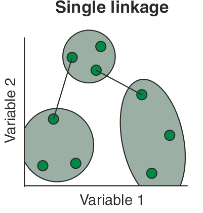
El resultado de la agrupación puede visualizarse como un dendrograma. El inconveniente del dendrograma resultante de un clustering de liga sencilla a menudo muestra el encadenamiento de las muestras. Los clústeres formados se ven forzados a unirse debido a que los elementos individuales están cerca unos de otros, mientras que muchos elementos de cada clúster pueden estar muy alejados entre sí. Otro inconveniente relevante del clustering de la liga sencilla es que podría ser difícil de interpretar en términos de particiones de los datos. Es una desventaja real del clustering de la liga sencilla porque estamos interesados en las particiones de los datos. Este método se tiende a desempeñar bien cuando hay grupos de forma elongada, conocidos como tipo cadena.
Veamos un ejemplo.
Ejemplo 1: Consideremos la siguiente matriz de distancias \[ D = (d_{ik}) = \begin{pmatrix} 0 & 9 & 3 & 6 & 11 \\ 9 & 0 & 7 & 5 & 10 \\ 3 & 7 & 0 & 9 & 2 \\ 6 & 5 & 9 & 0 & 8 \\ 11 & 10 & 2 & 8 & 0 \end{pmatrix} \]
Inicialmente cada objeto se considera un cluster individual. Buscamos la menor distancia en la matriz \(D\):
\[ \min_{i,k}(d_{ik}) = d_{53} = 2. \]
Por lo tanto, los objetos \(5\) y \(3\) se fusionan y forman el cluster \((35)\).
Ahora se debe actualizar la matriz de distancias para este nuevo cluster. La distancia entre \((35)\) y los restantes objetos se calcula tomando el mínimo de las distancias existentes. Por ejemplo:
\[ d_{(35)1} = \min\{d_{31}, d_{51}\} = \min\{3, 11\} = 3, \]
\[ d_{(35)2} = \min\{d_{32}, d_{52}\} = \min\{7, 10\} = 7, \]
\[ d_{(35)4} = \min\{d_{34}, d_{54}\} = \min\{9, 8\} = 8. \]
Eliminando filas y columnas correspondientes a \(3\) y \(5\), obtenemos una nueva matriz de distancias:
\[ \begin{array}{c|cccc} N & (35) & 1 & 2 & 4 \\ \hline (35) & 0 & 3 & 7 & 8 \\ 1 & 3 & 0 & 9 & 6 \\ 2 & 7 & 9 & 0 & 5 \\ 4 & 8 & 6 & 5 & 0 \end{array} \]
La distancia mínima entre estos clusters es ahora
\[ d_{(35)1} = 3. \]
Entonces se fusiona el objeto \(1\) con el cluster \((35)\), formando así \((135)\).
Se actualizan nuevamente las distancias:
\[ d_{(135)2} = \min\{d_{(35)2}, d_{12}\} = \min\{7, 9\} = 7, \]
\[ d_{(135)4} = \min\{d_{(35)4}, d_{14}\} = \min\{8, 6\} = 6. \]
La nueva matriz queda:
\[ \begin{array}{c|ccc} N & (135) & 2 & 4 \\ \hline (135) & 0 & 7 & 6 \\ 2 & 7 & 0 & 5 \\ 4 & 6 & 5 & 0 \end{array} \]
La mínima distancia es ahora \(d_{42} = 5\), por lo que los objetos \(4\) y \(2\) se fusionan formando \((24)\).
Finalmente, sólo quedan dos clusters: \((135)\) y \((24)\). Su distancia es:
\[ d_{(135)(24)} = \min\{d_{(135)2}, d_{(135)4}\} = \min\{7, 6\} = 6. \]
De esta manera se obtiene la última fusión, y el clustering final reúne a los cinco individuos:
\[ (13524). \]
Nota: Realicemos el dendrograma a mano primero, nos daremos cuenta de que muestra claramente las distancias a las que se produjeron las fusiones: primero a nivel \(2\), luego a \(3\), después a \(5\) y finalmente a \(6\).
En aplicaciones reales, es frecuente detener el proceso en un nivel intermedio del dendrograma, cuando el número de clusters resultante es interpretativamente significativo.
Veamos ahora el ejemplo en R.
A <- c(0,9,3,6,11)
B <- c(9,0,7,5,10)
C <- c(3, 7, 0, 9, 2)
D <- c(6, 5, 9, 0, 8 )
E <- c(11, 10, 2, 8, 0)
df <- data.frame(A,B,C,D,E, row.names = c("A","B","C","D","E"))
df %>% knitr::kable(format = "html")| A | B | C | D | E | |
|---|---|---|---|---|---|
| A | 0 | 9 | 3 | 6 | 11 |
| B | 9 | 0 | 7 | 5 | 10 |
| C | 3 | 7 | 0 | 9 | 2 |
| D | 6 | 5 | 9 | 0 | 8 |
| E | 11 | 10 | 2 | 8 | 0 |
dist <- as.dist(df, diag= TRUE)
cluster_single <- hclust (d = dist, method = 'single')
plot(cluster_single)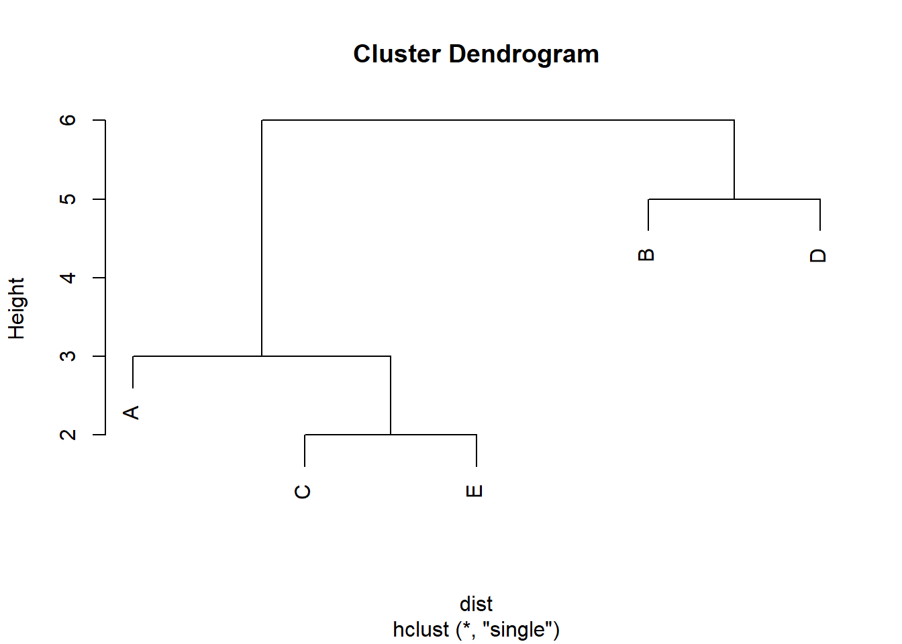
Figure 5.1: Cluster con el método single.
5.2.2 Clustering aglomerativo de la liga completa
El método de complete linkage (o enlace completo o clustering del vecino más lejano) sigue el mismo procedimiento general que el método de enlace simple. Sin embargo, existe una diferencia fundamental: en cada etapa del algoritmo, la distancia entre dos clusters se define como la distancia (o disimilitud) máxima entre sus elementos.
Iniciamos de nuevo encontrando la distancia más pequeña y creando el primer clúster \(UV\), de ahí calculamos la distancia entre un cluster formado por dos objetos \(U\) y \(V\) y otro cluster \(W\), como:
\[ d_{(UV),W} = \max\{d_{UW},\,d_{VW}\}. \]
Esto significa que la similitud entre dos clusters está determinada por el par de elementos más alejados entre ellos. De esta manera, el método de enlace completo garantiza que los objetos dentro de cada cluster no difieran entre sí más allá de una distancia máxima preestablecida.
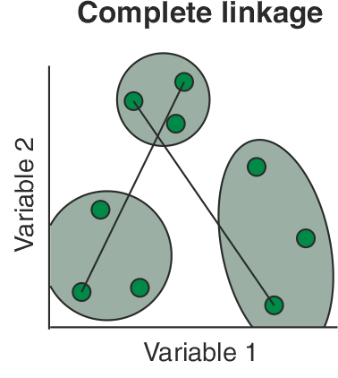
La agrupación de la liga completa evita el inconveniente de encadenar las muestras por el método de la liga simple. El encadenamiento completo tiende a encontrar muchos pequeños grupos separados. Este método se desempeña bien cuando los conglomerados son de forma circular.
Ejemplo 2: Consideremos la misma matriz del ejemplo anterior:
\[ D = (d_{ik}) = \begin{pmatrix} 0 & 9 & 3 & 6 & 11 \\ 9 & 0 & 7 & 5 & 10 \\ 3 & 7 & 0 & 9 & 2 \\ 6 & 5 & 9 & 0 & 8 \\ 11 & 10 & 2 & 8 & 0 \end{pmatrix} \]
Identificamos los objetos más cercanos. Como antes,
\[ \min_{i,k}(d_{ik}) = d_{53} = 2, \]
se fusionan los objetos \((3)\) y \((5)\) formando el cluster \((35)\).
Calculamos la distancia entre el cluster \((35)\) y los restantes objetos, ahora usando máximos:
\[ d_{(35),1} = \max\{d_{31}, d_{51}\} = \max\{3, 11\} = 11, \]
\[ d_{(35),2} = \max\{d_{32}, d_{52}\} = \max\{7, 10\} = 10, \]
\[ d_{(35),4} = \max\{d_{34}, d_{54}\} = \max\{9, 8\} = 9. \]
Al eliminar filas y columnas de \(3\) y \(5\), la matriz queda:
\[ \begin{array}{c|cccc} N & (35) & 1 & 2 & 4 \\ \hline (35) & 0 & 11 & 10 & 9 \\ 1 & 11 & 0 & 9 & 6 \\ 2 & 10 & 9 & 0 & 5 \\ 4 & 9 & 6 & 5 & 0 \end{array} \]
La mínima distancia ahora es entre \((2)\) y \((4)\):
\[ d_{42} = 6. \]
Se fusionan para formar el nuevo cluster \((24)\).
Calculamos distancias entre \((35)\) y \((24)\):
\[ d_{(24),(35)} = \max\{d_{2,(35)}, d_{4,(35)}\} = \max\{10, 9\} = 10. \]
Queda además comparar con el objeto \((1)\):
\[ d_{(24),1} = \max\{d_{21}, d_{41}\} = \max\{9, 6\} = 9, \]
La nueva matriz queda:
\[ \begin{array}{c|ccc} N & (35) & (24) & 1 \\ \hline (35) & 0 & 10 & 11 \\ (24) & 10 & 0 & 9 \\ 1 & 11 & 9 & 0 \end{array} \]
La menor distancia es \(9\), entre \((24)\) y \(1\), de modo que se forma el cluster \((124)\).
Finalmente se compara con \((35)\):
\[ d_{(124),(35)} = \max\{ d_{1,(35)}, d_{(24),(35)}\} = \max\{11, 10\} = 11. \]
Se obtiene el cluster total:
\[ (12345). \]
Nota: Representamos este resultado en el dendrograma correspondiente.
Al comparar el dendrograma generado por enlace simple con el de enlace completo, se observa que la asignación del objeto \((1)\) a los grupos previos difiere entre métodos. Esto se debe a que:
- Single linkage prioriza la cercanía mínima entre pares de objetos.
- Complete linkage prioriza la máxima distancia entre elementos al agrupar.
Por ello, complete linkage tiende a formar clusters más compactos y homogéneos.
Realicemos el ejemplo en R.
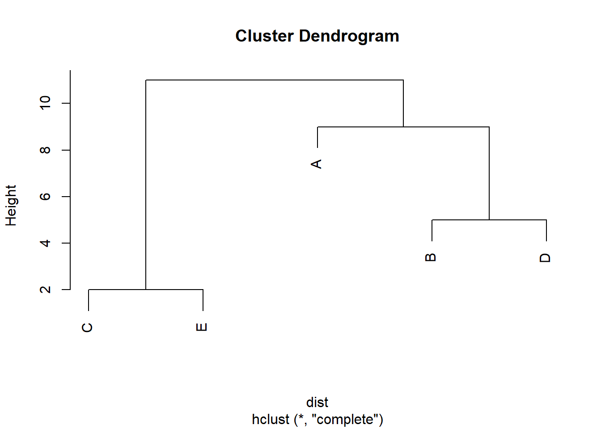
Figure 5.2: Cluster con el método complete.
5.2.3 Clustering aglomerativo de la liga promedio
El método de average linkage (enlace promedio) define la distancia entre dos clusters como el promedio de las distancias entre todos los pares de objetos donde un miembro del par pertenece a cada cluster.
Supongamos que tenemos un cluster \((UV)\) y otro cluster \(W\). La distancia entre ellos se define como
\[ d_{(UV)W} = \frac{\displaystyle\sum_{i \in (UV)} \sum_{k \in W} d_{ik}} {N_{(UV)}\,N_W}, \]
donde \(d_{ik}\) es la distancia entre el objeto \(i\) del cluster \((UV)\) y el objeto \(k\) del cluster \(W\), mientras que \(N_{(UV)}\) y \(N_W\) son las cardinalidades de los clusters \((UV)\) y \(W\), respectivamente.
El algoritmo aglomerativo procede igual que antes:
Cada objeto es inicialmente un cluster.
Se busca el par de clusters con menor distancia.
Se fusionan esos clusters y se actualiza la matriz de distancias usando la fórmula de promedio anterior.
Se repiten los pasos 2 y 3 hasta que todos los objetos formen un solo cluster.
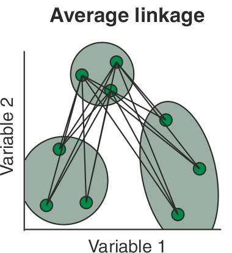
El clúster resultante del dendrograma tiene un aspecto intermedio entre una agrupación de enlace simple y una completa.
Ejemplo 3: Consideremos la matriz de los ejemplos anteriores.
\[ D = (d_{ik}) = \begin{pmatrix} 0 & 9 & 3 & 6 & 11 \\ 9 & 0 & 7 & 5 & 10 \\ 3 & 7 & 0 & 9 & 2 \\ 6 & 5 & 9 & 0 & 8 \\ 11 & 10 & 2 & 8 & 0 \end{pmatrix}. \]
Buscamos la distancia mínima (fuera de la diagonal). La menor entrada es
\[ \min_{i,k} d_{ik} = d_{35} = 2. \]
Por tanto, fusionamos los objetos \(3\) y \(5\) para formar el cluster \((35)\).
Calculamos ahora las distancias entre el cluster \((35)\) y los objetos restantes \(1,2,4\). Como cada uno de éstos es un cluster de tamaño \(1\), tenemos:
\[ d_{(35),1} = \frac{d_{31} + d_{51}}{2} = \frac{3 + 11}{2} = 7, \]
\[ d_{(35),2} = \frac{d_{32} + d_{52}}{2} = \frac{7 + 10}{2} = \frac{17}{2} = 8.5, \]
\[ d_{(35),4} = \frac{d_{34} + d_{54}}{2} = \frac{9 + 8}{2} = \frac{17}{2} = 8.5. \]
La nueva matriz de distancias (con clusters \((35)\), \(1\), \(2\), \(4\)) es
\[ \begin{array}{c|cccc} N & (35) & 1 & 2 & 4 \\\hline (35) & 0 & 7 & 8.5 & 8.5 \\ 1 & 7 & 0 & 9 & 6 \\ 2 & 8.5 & 9 & 0 & 5 \\ 4 & 8.5 & 6 & 5 & 0 \end{array} \]
La mínima distancia ahora es
\[ d_{24} = 5, \]
así que fusionamos los objetos \(2\) y \(4\) para obtener el cluster \((24)\).
Calculamos las distancias entre \((24)\) y los demás clusters \((35)\) y \(1\). Recordando que \(N_{(24)} = 2\), \(N_{(35)} = 2\) y \(N_1 = 1\):
\[ d_{(24),1} = \frac{d_{21} + d_{41}}{2} = \frac{9 + 6}{2} = \frac{15}{2} = 7.5, \]
\[ d_{(24),(35)} = \frac{1}{2\cdot 2} \left( d_{23} + d_{25} + d_{43} + d_{45} \right) = \frac{7 + 10 + 9 + 8}{4} = \frac{34}{4} = 8.5. \]
Ya habíamos calculado \(d_{(35),1} = 7\) en la etapa anterior. La matriz de distancias para los clusters \((35)\), \((24)\) y \(1\) es
\[ \begin{array}{c|ccc} N & (35) & (24) & 1 \\ \hline (35) & 0 & 8.5 & 7 \\ (24) & 8.5 & 0 & 7.5 \\ 1 & 7 & 7.5 & 0 \end{array} \]
La menor distancia es
\[ d_{(35),1} = 7, \]
por lo que se fusionan el objeto \(1\) con el cluster \((35)\), obteniendo el cluster \((135)\), de tamaño \(N_{(135)}=3\).
Ahora sólo quedan dos clusters: \((135)\) y \((24)\). Calculamos su distancia:
\[ d_{(135),(24)} = \frac{1}{3\cdot 2} \sum_{i \in \{1,3,5\}} \sum_{k \in \{2,4\}} d_{ik}. \]
Las distancias relevantes son
\[ d_{12}=9,\quad d_{14}=6,\quad d_{32}=7,\quad d_{34}=9,\quad d_{52}=10,\quad d_{54}=8. \]
Por lo tanto,
\[ \sum d_{ik} = 9 + 6 + 7 + 9 + 10 + 8 = 49, \]
y
\[ d_{(135),(24)} = \frac{49}{6} \approx 8.17. \]
Al ser el único par de clusters restante, \((135)\) y \((24)\) se fusionan en el nivel de distancia \(49/6\), produciendo el cluster final \((12345)\).
El dendrograma resultante muestra fusiones sucesivas a los niveles de distancia \[ 2,\quad 5,\quad 7,\quad \frac{49}{6}\approx 8.17, \] correspondientes, respectivamente, a las fusiones \[ (3,5),\quad (2,4),\quad (1,(35)),\quad ((135),(24)). \]
Este ejemplo ilustra cómo el criterio de average linkage utiliza el promedio de todas las distancias entre pares de objetos de dos clusters, lo cual suele producir grupos con un compromiso entre la compacidad de complete linkage y la tendencia a cadenas de single linkage.
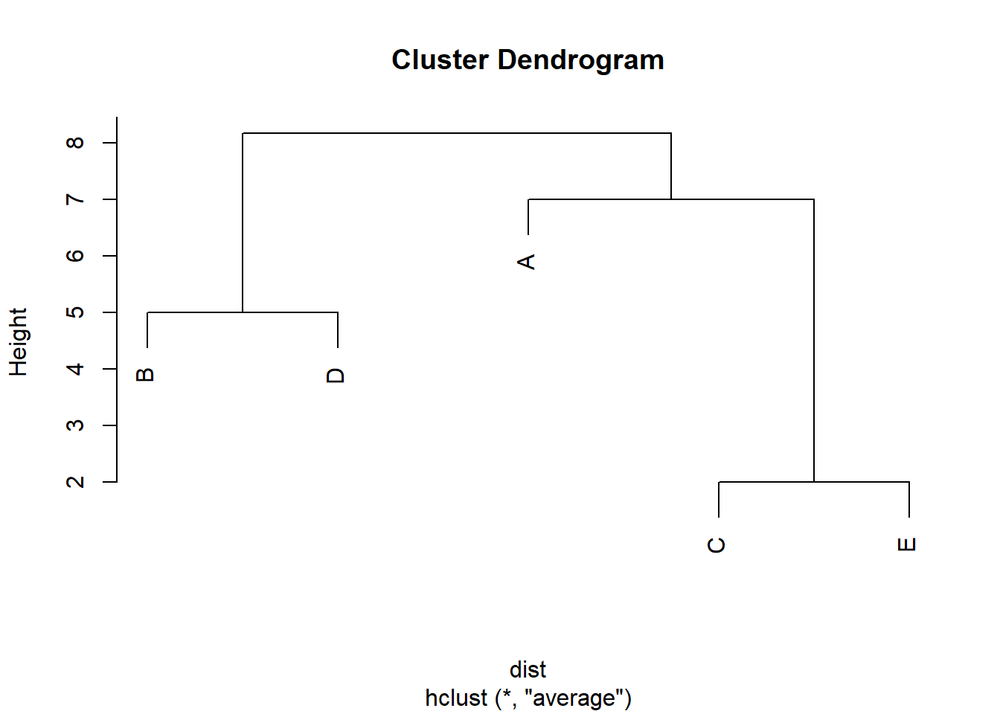
Figure 5.3: Cluster con el método average.
5.2.4 Agrupación de varianza mínima de Ward
El método jerárquico propuesto por Ward (1963) se basa en minimizar la pérdida de información que ocurre cuando se fusionan dos clusters. Dicha pérdida de información se mide normalmente como el aumento en la suma de cuadrados del error (Error Sum of Squares, ESS). Este método sea conceptualmente análogo a un análisis de la varianza.
Sea \(k\) un cluster cualquiera, y definamos
\[ ESS_k = \sum_{x_j \in k} (x_j - \bar{x}_k)'(x_j - \bar{x}_k), \]
es decir, la suma de las desviaciones cuadráticas de los elementos del cluster con respecto a su centroide \(\bar{x}_k\).
Si actualmente existen \(K\) clusters, definimos
\[ ESS = ESS_1 + ESS_2 + \cdots + ESS_K. \]
En cada etapa del algoritmo jerárquico se considera la posible unión de todos los pares de clusters, evaluando el incremento que dicha unión produciría en el valor total de \(ESS\). El par de clusters que se fusiona es aquel cuya unión genera el menor incremento en \(ESS\). De esta forma se garantiza que cada fusión produzca la mínima pérdida de información posible.
Valores extremos del algoritmo:
- Inicialmente, cada objeto es un cluster de tamaño uno, por lo que \(ESS_k = 0\) para todos los clusters.
- En el otro extremo, cuando todos los objetos se encuentran en un único cluster, el valor final es \[ ESS = \sum_{j=1}^N (x_j - \bar{x})'(x_j - \bar{x}), \] donde \(\bar{x}\) es el vector promedio de todos los elementos.
Interpretación geométrica: El método de Ward está fundamentado en la idea de que los clusters resultantes deben ser aproximadamente de forma elíptica y compacta, pues la suma de cuadrados mide dispersiones alrededor de centros promedios. Por esta razón, Ward:
- tiende a producir grupos balanceados en tamaño;
- evita formar cadenas largas de puntos (como ocurre con single linkage);
- penaliza la incorporación de puntos alejados del centro del cluster.
Representación gráfica: Los resultados de Ward pueden visualizarse mediante un dendrograma. El eje vertical actúa como escala del incremento en \(ESS\) asociado a cada fusión. Las alturas de los nodos indican el costo de unión de los clusters.
En resumen, el método de Ward es una versión jerárquica de técnicas de partición que buscan optimizar compactación dentro de los grupos. Es precursor directo de métodos no jerárquicos, tales como k-means, que minimizan variaciones internas utilizando centros promedio como referencia.
Este enfoque es particularmente adecuado para variables cuantitativas, ya que opera a partir de medidas basadas en medias y varianzas. Por ello, el método de Ward no resulta tan natural cuando las variables son binarias o categóricas sin transformar. Además, en su formulación clásica, la distancia inicial entre objetos corresponde a la distancia euclidiana al cuadrado, pues bajo dicha métrica la variación intra–grupo coincide estrictamente con la suma de cuadrados dentro del cluster.
Al final del proceso jerárquico, el dendrograma generado tiene como eje vertical los incrementos sucesivos en \(ESS\), ilustrando el costo de cada fusión. Debido a su criterio de minimización de varianza, Ward tiende a producir clusters más compactos y equilibrados que los derivados de criterios basados en distancias mínimas (single linkage) o máximas (complete linkage).
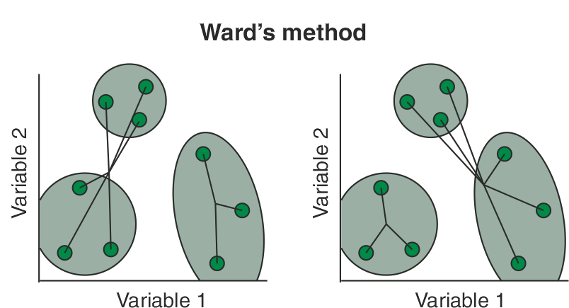
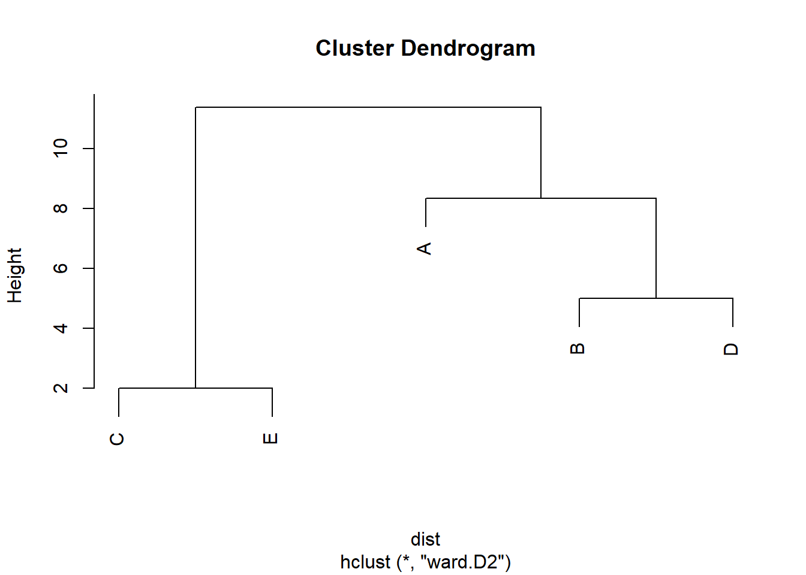
Figure 5.4: Cluster con el método Ward.
Comparando los cuatro métodos:
# Correrlo en consola para visualizarlo mejor
par (mfrow = c(2,2))
plot(cluster_single)
plot(cluster_complete)
plot(cluster_average)
plot(cluster_ward)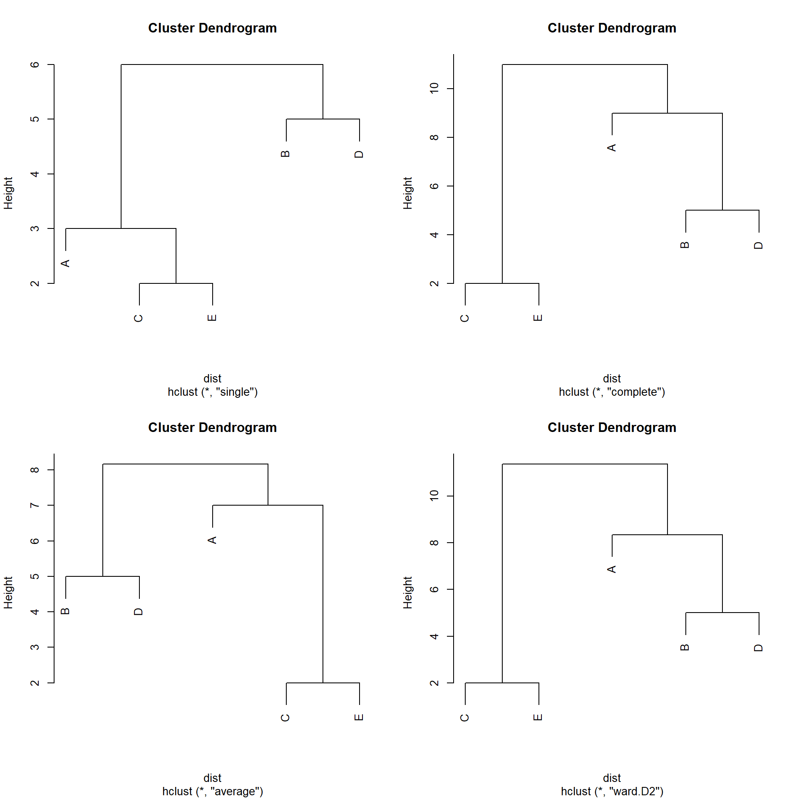
Figure 5.5: Comparación de los clusters con los 4 métodos.
¿Qué puedes decir al respecto si comparas el desempeño de estos 4 métodos?
5.2.5 Mismos gráficos usando el paquete factoextra
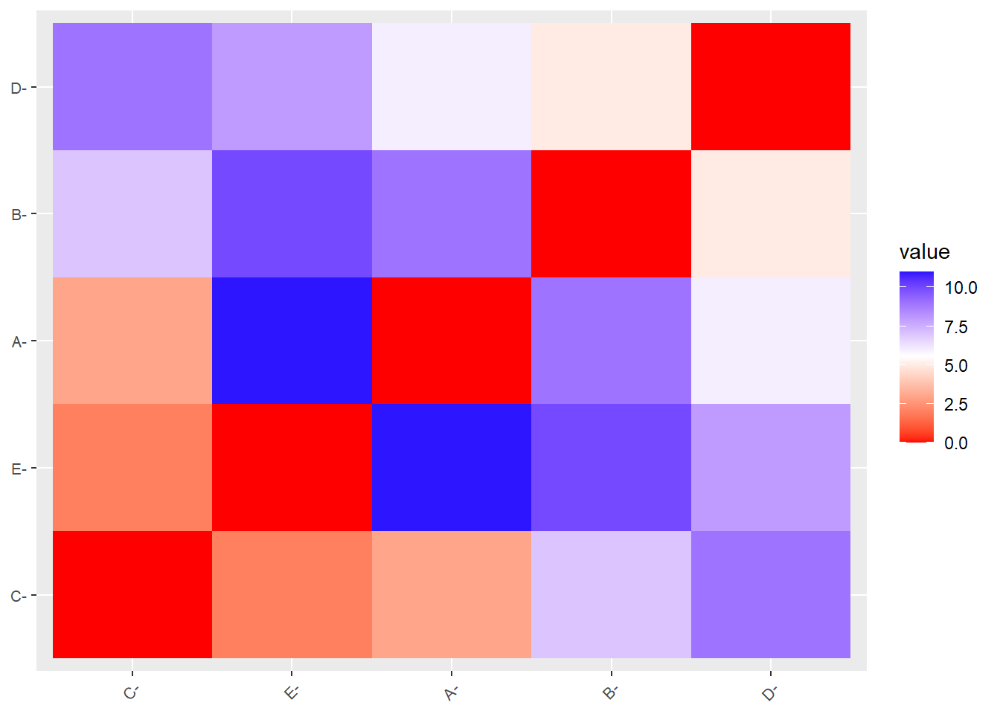
Figure 5.6: Heatmap de la matriz de distancias
set.seed(12345)
hc_single <- hclust(d=dist, method = "single")
hc_average <- hclust(d=dist, method = "average")
hc_complete <- hclust(d=dist, method = "complete")
hc_ward <- hclust(d=dist, method = "ward.D2")
## Otros dos métodos
hc_median <- hclust(d=dist, method = "median")
hc_centroid <- hclust(d=dist, method = "centroid")fviz_dend(x = hc_single, k=3,
cex = 0.7,
main = "",
xlab = "Samples",
ylab = "Distance",
sub = "",
horiz = TRUE)+
geom_hline(yintercept = 2.5, linetype = "dashed")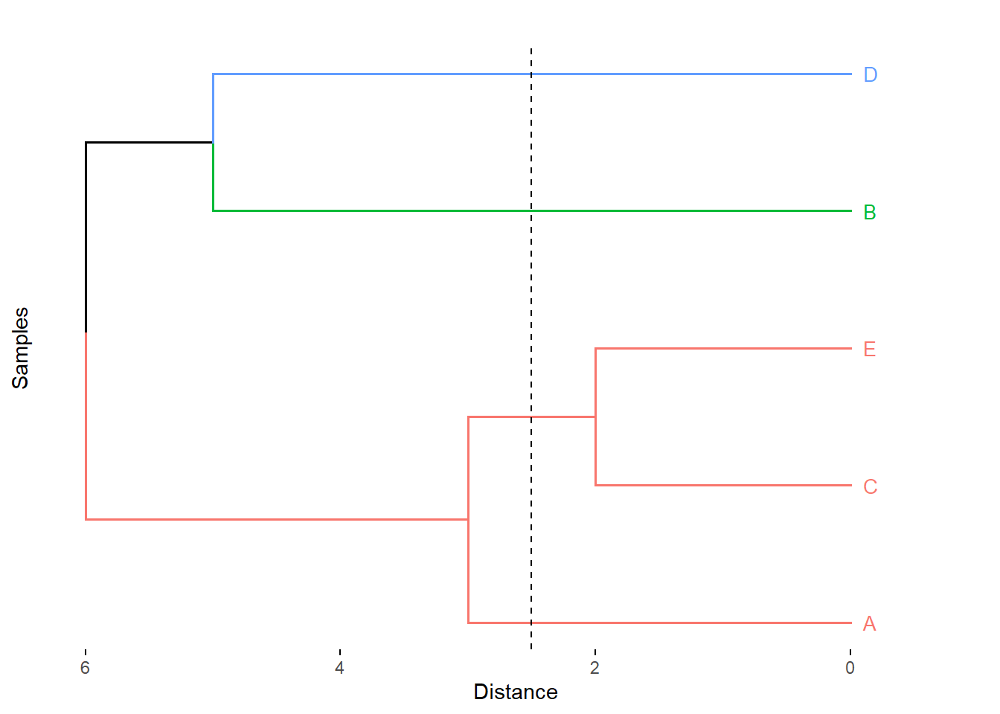
Figure 5.7: Cluster con el método de la liga más sencilla.
fviz_dend(x = hc_complete, k=3,
cex = 0.7,
main = "",
xlab = "Samples",
ylab = "Distance",
sub = "",horiz = TRUE)+
geom_hline(yintercept = 6, linetype = "dashed")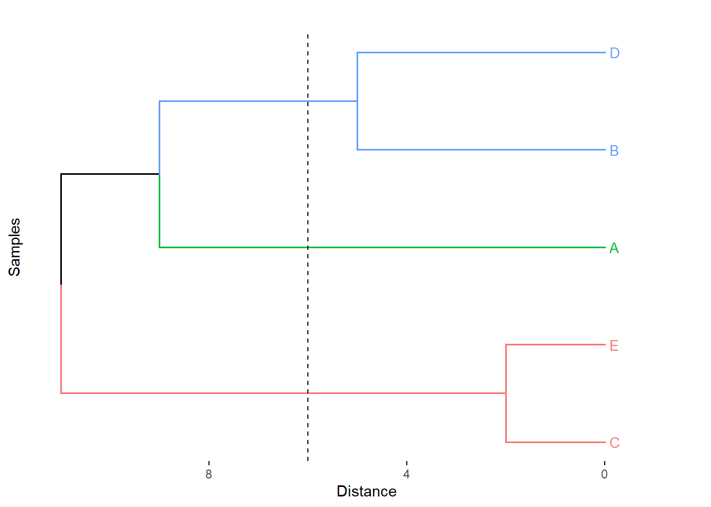
Figure 5.8: Cluster con el método de la liga completa.
fviz_dend(x = hc_average, k=3,
cex = 0.7,
main = "",
xlab = "Samples",
ylab = "Distance",
sub = "",
horiz = TRUE) +
geom_hline(yintercept = 4, linetype = "dashed") 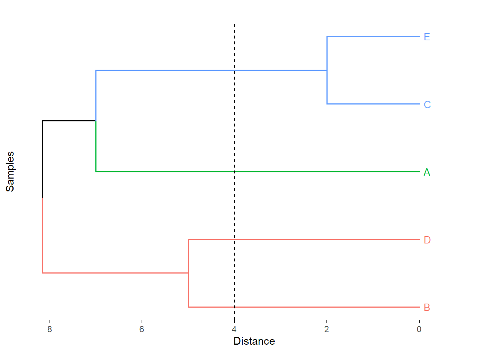
Figure 5.9: Cluster con el método del promedio.
fviz_dend(x = hc_ward, k=3,
cex = 0.7,
main = "",
xlab = "Samples",
ylab = "Distance",
sub = "",
horiz = TRUE)+
geom_hline(yintercept = 6, linetype = "dashed")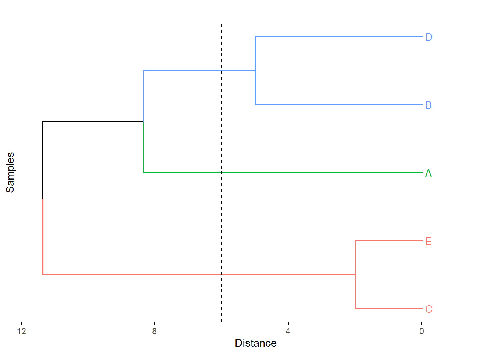
Figure 5.10: Cluster con el método Ward.
fviz_dend(x = hc_median, k=3,
cex = 0.7,
main = "",
xlab = "Samples",
ylab = "Distance",
sub = "",
horiz = TRUE)+
geom_hline(yintercept = 5, linetype = "dashed")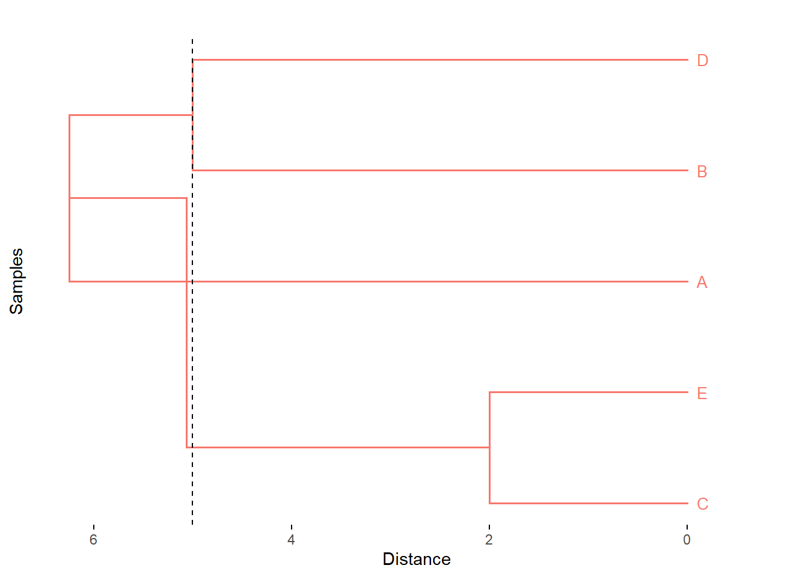
Figure 5.11: Cluster con el método mediana.
fviz_dend(x = hc_centroid, k=3,
cex = 0.7,
main = "",
xlab = "Samples",
ylab = "Distance",
sub = "",
horiz = TRUE)+
geom_hline(yintercept = 4.7, linetype = "dashed")
Figure 5.12: Cluster con el método del centroide.
Comentarios finales sobre los procedimientos jerárquicos
Además de los métodos basados en enlace simple, completo o promedio, existen muchas otras variantes de clustering jerárquico aglomerativo; sin embargo, todas siguen esencialmente el algoritmo general descrito anteriormente: partir de \(N\) grupos individuales y fusionar iterativamente los más similares.
Al igual que en otros procedimientos de clustering, los métodos jerárquicos pueden verse afectados por errores en los datos o por variabilidad no controlada. Esto implica que el resultado puede ser sensible a la presencia de valores atípicos o puntos ruidosos.
Una característica importante del clustering jerárquico es que no existe un mecanismo explícito de reubicación de elementos una vez que se han fusionado. Si un objeto se incorpora erróneamente a un cluster en una etapa temprana, dicho error persistirá hasta el final del proceso. Por esta razón, la interpretación del dendrograma debe realizarse cuidadosamente, evaluando si la estructura de grupos es razonable.
En la práctica, es recomendable aplicar diferentes métodos de clustering o utilizar distintos criterios de distancia dentro del mismo método. Si los resultados obtenidos son consistentemente similares, se puede argumentar con mayor confianza la presencia de grupos “naturales”.
La estabilidad de una solución jerárquica puede evaluarse mediante pequeñas perturbaciones a los datos (por ejemplo, añadiendo ruido controlado o repitiendo mediciones). Si los grupos son bien definidos, el dendrograma resultante debe permanecer similar después de la perturbación.
Finalmente, es posible que existan empates en valores de distancia entre pares de clusters, lo cual puede conducir a soluciones múltiples válidas. En estos casos, diferentes dendrogramas pueden representar distintas decisiones de fusión en niveles inferiores del árbol. Esto no necesariamente indica un problema metodológico, sino que refleja ambigüedad legítima en la estructura de similitudes del conjunto de datos. El usuario debe estar consciente de ello para interpretar adecuadamente las posibles estructuras de agrupamiento.
5.2.6 Número óptimo de clústers
Para seleccionar la partición más adecuada de los datos, primero comparamos distintos métodos de agrupamiento jerárquico a partir de la calidad del dendrograma que generan. Dicha calidad se evaluó calculando el coeficiente de correlación cofenético entre la matriz de distancias original y las distancias cofenéticas derivadas del dendrograma correspondiente (véase Cuadro 5.1). Valores cercanos a 1 indican que la estructura jerárquica preserva adecuadamente las relaciones de proximidad originales entre las observaciones, por lo que el dendrograma constituye una buena representación de los datos.
Una vez seleccionado el dendrograma que mejor reproduce la estructura de distancias, el número óptimo de clústers se determinó mediante la inspección del dendrograma y la identificación de incrementos marcados en los niveles de fusión, los cuales sugieren separaciones naturales entre grupos. Adicionalmente, se evaluaron distintas particiones mediante criterios de validación interna, tales como el coeficiente de silhouette promedio, con el fin de corroborar la estabilidad y coherencia de la estructura obtenida.
Con este procedimiento combinado (fidelidad del dendrograma y evaluación de cohesión/separación) se seleccionó el número final de clústers a reportar.
##
## Adjuntando el paquete: 'kableExtra'## The following object is masked from 'package:dplyr':
##
## group_rows# vector con nombre de los métodos
m <- c( "average", "single", "complete", "ward.D2", "median", "centroid")
names(m) <- c( "average", "single", "complete", "ward.D2", "median", "centroid")
# Función para calcular el coeficiente de correlación
coef_cor <- function(x) {
cor(x=dist, cophenetic(hclust(d=dist, method = x)))
}
# Tabla comparativa
coef_tabla <- map_dbl(m, coef_cor)
kbl(coef_tabla, booktabs = TRUE, align = "c",
caption = "Cuadro comparativo de los coeficientes de correlación",
col.names = rownames(coef_tabla)) %>%
kable_styling(position = "center",
latex_options = c("repeat_header", "hold_position"),
font_size = 9) %>%
add_header_above(c("Método", "Coeficiente de correlación"))| average | 0.6816035 |
| single | 0.5139962 |
| complete | 0.6521790 |
| ward.D2 | 0.6349740 |
| median | 0.5333157 |
| centroid | 0.5676691 |
A partir de los coeficientes de correlación cofenética (Cuadro 5.1), observamos que el dendrograma obtenido mediante el método average es el que mejor preserva la estructura de similitudes original entre las observaciones, seguido por el método median. Por este motivo, utilizamos el dendrograma generado con average como base para determinar la partición final.
Posteriormente, para determinar el número adecuado de clústers, utilizamos dos enfoques complementarios: el método del codo aplicado a la variación explicada y el paquete NbClust. Este último permite evaluar de manera simultánea un conjunto amplio de índices de validación (por ejemplo, Calinski–Harabasz, Dunn, Silhouette, entre otros), con el fin de sugerir el número de clústers más adecuado dentro de un rango especificado. Con base en la concordancia entre ambos enfoques, seleccionamos el número final de grupos a analizar.
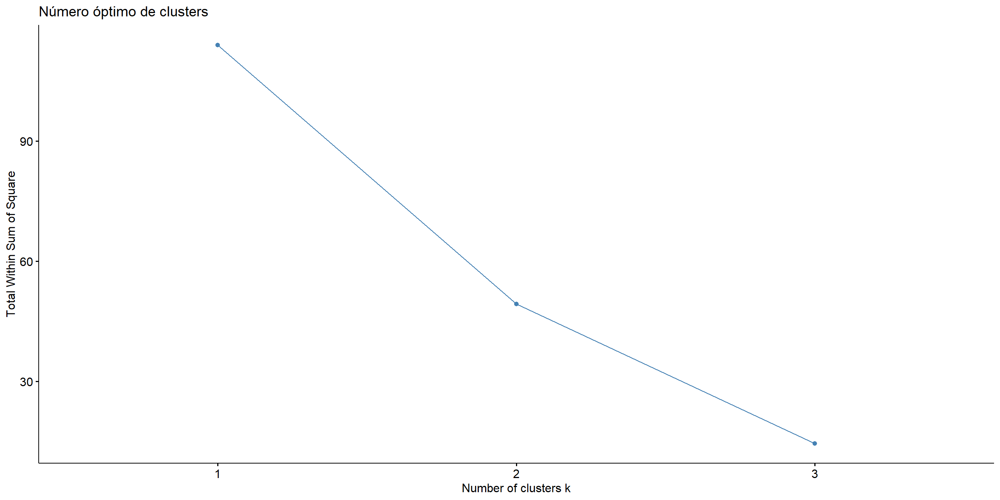
Figure 5.13: Número óbtimo de clusters usando el método del codo
Podemos observar en la gráfica de codo que en 2 es donde se forma el codo, así que esto nos diría que debemos considerar 2 clústers.
Usando el paquete ‘NbClust’ se pueden obtener una comparación del número óptimo de clústers. Para el ejemplo que hemos estado realizando, no es posible aplicarle esto, pero lo que deberíamos de realizar es lo siguiente.
5.3 Ejercicios
Ejercicio 1 (Ejemplo 12.2, Johnsonn y Wichern): Ssimilitud entre 11 lenguas.
El significado de las palabras cambia a lo largo de la historia; sin embargo, el significado de los números \(1,2,3,\dots\) se mantiene notablemente estable. Esto permite comparar lenguas utilizando únicamente las palabras para los numerales.
En la tabla siguiente se muestran las palabras que representan los números del 1 al 10 en once lenguas europeas modernas: inglés, noruego, danés, neerlandés, alemán, francés, español, italiano, polaco, húngaro y finés.
(Únicamente se consideran lenguas que usan el alfabeto romano; se omiten acentos, diéresis, cedillas, etc.)
Una inspección rápida de la tabla sugiere que las primeras cinco lenguas (inglés, noruego, danés, neerlandés y alemán) son muy parecidas entre sí.
Las lenguas francesa, española e italiana parecen guardar una similitud aún mayor entre ellas. Húngaro y finés parecen más aisladas, y el polaco comparte características con las lenguas de ambos subgrupos mayores.
library(knitr)
tabla1 <- data.frame(
Ingles = c("one","two","three","four","five","six","seven","eight","nine","ten"),
Noruego = c("en","to","tre","fire","fem","seks","sju","atte","ni","ti"),
Danes = c("en","to","tre","fire","fem","seks","syv","otte","ni","ti"),
Neerlandes = c("een","twee","drie","vier","vijf","zes","zeven","acht","negen","tien"),
Aleman = c("eins","zwei","drei","vier","funf","sechs","sieben","acht","neun","zehn"),
Frances = c("un","deux","trois","quatre","cinq","six","sept","huit","neuf","dix"),
Espanol = c("uno","dos","tres","cuatro","cinco","seis","siete","ocho","nueve","diez"),
Italiano = c("uno","due","tre","quattro","cinque","sei","sette","otto","nove","dieci"),
Polaco = c("jeden","dwa","trzy","cztery","piec","szesc","siedem","osiem","dziewiec","dziesiec"),
Hungaro = c("egy","ketto","harom","negy","ot","hat","het","nyolc","kilenc","tiz"),
Fines = c("yksi","kaksi","kolme","neljä","viisi","kuusi","seitsemän","kahdeksan","yhdeksän","kymmenen")
)
kable(tabla1, caption = "Numerales del 1 al 10 en 11 lenguas europeas")| Ingles | Noruego | Danes | Neerlandes | Aleman | Frances | Espanol | Italiano | Polaco | Hungaro | Fines |
|---|---|---|---|---|---|---|---|---|---|---|
| one | en | en | een | eins | un | uno | uno | jeden | egy | yksi |
| two | to | to | twee | zwei | deux | dos | due | dwa | ketto | kaksi |
| three | tre | tre | drie | drei | trois | tres | tre | trzy | harom | kolme |
| four | fire | fire | vier | vier | quatre | cuatro | quattro | cztery | negy | neljä |
| five | fem | fem | vijf | funf | cinq | cinco | cinque | piec | ot | viisi |
| six | seks | seks | zes | sechs | six | seis | sei | szesc | hat | kuusi |
| seven | sju | syv | zeven | sieben | sept | siete | sette | siedem | het | seitsemän |
| eight | atte | otte | acht | acht | huit | ocho | otto | osiem | nyolc | kahdeksan |
| nine | ni | ni | negen | neun | neuf | nueve | nove | dziewiec | kilenc | yhdeksän |
| ten | ti | ti | tien | zehn | dix | diez | dieci | dziesiec | tiz | kymmenen |
Para cuantificar la similitud entre dos lenguas podemos fijarnos únicamente en la primera letra de cada palabra. Diremos que dos palabras para el mismo número en dos lenguas distintas son concordantes si tienen la misma letra inicial y discordantes en caso contrario.
A partir de la Tabla anterior podemos construir una tabla de concordancias entre lenguas: para cada par de lenguas contamos cuántas veces (sobre los 10 numerales) coinciden las letras iniciales de sus palabras. El resultado se resume en la Tabla siguiente. Por ejemplo, el valor 8 en la celda \((\text{E},\text{N})\) indica que inglés y noruego comparten la misma letra inicial en 8 de los 10 numerales.
tabla2 <- data.frame(
row.names = c("E","N","Da","Du","G","Fr","Sp","I","P","H","Fi"),
E = c(10,8,8,3,4,4,4,4,3,1,1),
N = c(8,10,9,5,6,4,4,4,3,2,1),
Da = c(8,9,10,4,5,4,5,5,4,2,1),
Du = c(3,5,4,10,5,1,1,1,0,2,1),
G = c(4,6,5,5,10,3,3,3,2,1,1),
Fr = c(4,4,4,1,3,10,8,9,5,0,1),
Sp = c(4,4,5,1,3,8,10,9,7,0,1),
I = c(4,4,5,1,3,9,9,10,6,0,1),
P = c(3,3,4,0,2,5,7,6,10,0,2),
H = c(1,2,2,2,1,0,0,0,0,10,1),
Fi = c(1,1,1,1,1,1,1,1,2,1,10)
)
kable(tabla2, caption = "Concordancias entre primeras letras de los numerales (1--10)")| E | N | Da | Du | G | Fr | Sp | I | P | H | Fi | |
|---|---|---|---|---|---|---|---|---|---|---|---|
| E | 10 | 8 | 8 | 3 | 4 | 4 | 4 | 4 | 3 | 1 | 1 |
| N | 8 | 10 | 9 | 5 | 6 | 4 | 4 | 4 | 3 | 2 | 1 |
| Da | 8 | 9 | 10 | 4 | 5 | 4 | 5 | 5 | 4 | 2 | 1 |
| Du | 3 | 5 | 4 | 10 | 5 | 1 | 1 | 1 | 0 | 2 | 1 |
| G | 4 | 6 | 5 | 5 | 10 | 3 | 3 | 3 | 2 | 1 | 1 |
| Fr | 4 | 4 | 4 | 1 | 3 | 10 | 8 | 9 | 5 | 0 | 1 |
| Sp | 4 | 4 | 5 | 1 | 3 | 8 | 10 | 9 | 7 | 0 | 1 |
| I | 4 | 4 | 5 | 1 | 3 | 9 | 9 | 10 | 6 | 0 | 1 |
| P | 3 | 3 | 4 | 0 | 2 | 5 | 7 | 6 | 10 | 0 | 2 |
| H | 1 | 2 | 2 | 2 | 1 | 0 | 0 | 0 | 0 | 10 | 1 |
| Fi | 1 | 1 | 1 | 1 | 1 | 1 | 1 | 1 | 2 | 1 | 10 |
Los resultados de la Tabla anterior confirman la impresión visual de la primer tabla: inglés, noruego, danés, neerlandés y alemán parecen formar un grupo; francés, español, italiano y polaco podrían agruparse juntos, mientras que húngaro y finés parecen más aislados.
A partir de la tabla de concordancias \(\big(c_{ij}\big)\) de la Tabla , construyan una matriz de disimilitudes definiendo, por ejemplo, \[ d_{ij} = 10 - c_{ij}, \] para \(i \neq j\), y \(d_{ii} = 0\). (Es decir, mientras mayor sea el número de diferencias en las letras iniciales, mayor será la disimilitud entre las lenguas \(i\) y \(j\).)
Apliquen métodos de clustering jerárquico aglomerativo utilizando al menos los siguientes criterios de enlace:
enlace simple,
enlace completo,
enlace promedio,
método de Ward.
- Para cada método de enlace:
Generen el dendrograma correspondiente a la matriz de disimilitudes \(D = (d_{ij})\).
Calcule el coeficiente de correlación cofenético entre la matriz de disimilitudes original y las distancias cofenéticas del dendrograma.
Comparen los dendrogramas obtenidos y los valores de correlación cofenética. ¿Qué método produce el dendrograma que mejor preserva la estructura de similitudes entre las lenguas?
Usando el dendrograma seleccionado en el punto anterior:
Exploren distintos cortes del árbol para obtener diferentes números de clústers (\(k=2,3,\dots\)).
Utilicen el método del codo (basado en la suma de cuadrados intra–grupo) y, si lo desean, índices adicionales de validación interna (por ejemplo, silhouette promedio) para determinar el número más adecuado de clústers.
- Finalmente, interpreten los clústers obtenidos:
¿Qué lenguas quedan agrupadas en cada clúster?
¿Coinciden los grupos encontrados con la impresión inicial basada en las dos tablas?
Ejercicio 2: Carga la base de datos USArrests. Obtén los dendrogramas y compara cuales realizan una mejor agrupación. ¿Cuál es el número óptimo de clusters?
5.4 Clustering no jerárquico
Los métodos de clustering no jerárquicos están diseñados para agrupar (ítems), más que variables, en una colección de \(K\) clústers. El número de clústers \(K\) puede fijarse de antemano o bien determinarse como parte del procedimiento de agrupamiento.
A diferencia de los métodos jerárquicos, en los métodos no jerárquicos no es necesario trabajar explícitamente con una matriz completa de distancias (o similitudes), ni almacenarla durante todo el proceso de cómputo. Esto permite aplicar estos métodos a conjuntos de datos mucho más grandes que los que suelen manejarse con técnicas jerárquicas.
En general, los métodos no jerárquicos parten de:
una partición inicial de los ítems en grupos, o
un conjunto inicial de ``puntos semilla’’, que funcionarán como núcleos de los clústers.
Una buena elección de la configuración inicial es importante y, en la medida de lo posible, debe evitar sesgos evidentes. Una estrategia simple consiste en elegir aleatoriamente los puntos semilla entre las observaciones, o bien asignar aleatoriamente los ítems a grupos iniciales.
En esta sección consideramos uno de los procedimientos no jerárquicos más populares: el método de \(k\)-means.
5.4.1 K-means
MacQueen introdujo el término \(k\)-means para describir un algoritmo que asigna cada observación al clúster cuyo centroide (media) sea más cercano. En su versión más simple, el proceso consta de los siguientes pasos:
Partición inicial: Dividir las observaciones en \(K\) clústers iniciales (o bien elegir \(K\) centroides iniciales).
Asignación: Recorrer la lista de observaciones y asignar cada una al clúster cuyo centroide esté más cerca. La distancia suele ser la euclidiana, usando ya sea datos estandarizados o sin estandarizar.
Actualización: Recalcular el centroide de cada clúster a partir de las observaciones que contiene tras la nueva asignación.
Iteración: Repetir los pasos 2 y 3 hasta que no se produzcan reasignaciones (o los cambios sean despreciables).
En lugar de comenzar con una partición inicial de todos los ítems en \(K\) grupos (Paso 1), también es posible especificar directamente \(K\) centroides iniciales (puntos semilla) y empezar el algoritmo a partir del Paso 2.
La asignación final de las observaciones a los clústers depende, en cierta medida, de la partición o de los centroides iniciales elegidos. La experiencia indica que la mayoría de los cambios importantes en la asignación ocurren durante las primeras iteraciones, y posteriormente el algoritmo tiende a estabilizarse.
Ejemplo 1: Supongamos que medimos dos variables \(X_1\) y \(X_2\) para cuatro ítems: A, B, C y D. Los datos se muestran en la tabla siguiente:
| Ítem | x1 | x2 |
|---|---|---|
| A | 5 | 3 |
| B | -1 | 1 |
| C | 1 | -2 |
| D | -3 | -2 |
El objetivo consiste en dividir estos ítems en \(K = 2\) clústers, de modo que los elementos dentro de un clúster sean más similares entre sí que respecto a los elementos del otro clúster.
Para implementar el método \(k\)-means con \(K=2\), iniciamos con una partición arbitraria. Supongamos que asignamos inicialmente: \[ \text{Cluster 1: } (A,B), \qquad \text{Cluster 2: } (C,D). \]
Entonces, el paso 1 sería calcular los centroides iniciales. Después, la reasignación usando distancia euclidiana y el nuevo cálculo de centroides, hasta terminar el proceso.
5.5 Tutoriales de DataCamp sugeridos
Otro material sugerido: BiotrAIn course: Concepts, approaches and applications of Artificial Intelligence in bioscience